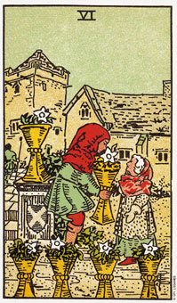

圣杯六代表保障和安全。
圣杯六描绘的是一种温柔而隐秘的情景。其中有某种程度的保障和安全，它带有一种可预知性。保障和安全倍受珍惜，不过这是以极高的代价换来的。因为没有什么冒险，所以通常没什么成长。
这张牌描述一种两性关系，其中一人会去教导或保护另一人。然而或许你在保护伴侣使其远离伤害上做得面面俱到，但你仍冒着不让他们直接经历事件，以及有所成长以发展之机会的危险。结果便是停滞不前。这种关系很快的就会形成一种不允许对方成长及发展模式，无法超越这张牌上城堡的高墙。
这张6代表发展某个两性关系的一个阶段，这阶段既必须且重要，我们必须记住，不论如何，这只是一个阶段，当你朝着圣杯十前进的时候，你或是你的伴侣早晚会超越这个阶段。
6也可以代表过去：对童年时光的缅怀、对前一段两性关系或熟悉环境之回忆。在有关旅行的问题方面，它可代表回到熟悉的地方。
牌上面这两个人有着成年人的面孔和孩子般的穿着，这即在强调在一段两性关系中，他们需要负起更多个人的责任。他们对过去以及牌五当中所经历的悲伤有着清晰的记忆，并且它们回忆行动走出恐惧，创造一个安全的处境。他们在两性关系中扮演“妈妈和爸爸”的角色，并且让身边充满各种合适的衣物和财物，希望这些可带给他们满足，以取代牌五当中所经历的失落。通常在六当中，可以增加安全和稳定的任何事物都是他们搜集的对象。
大体上的意义
圣杯六暗示以成长为代价而得到保障、安全和亲密。它可以意指你的居家或家庭状态的稳定。也可能是过去的事物或人们又出现了，等着你去处理。他也可以代表一种舒适的状态，让你有时间静下来，重新关注活力或安顿下来。
六也可能暗示某个工作或两性关系环境当中充满了习惯和模式。在这种情况下，你根本不需要塔罗牌来告诉你，即将会发生什么事，因为事情总是那个样子。
在有关旅行的分析中，这张牌表示你会回到你的出生地，或某些充满强烈儿时回忆的地方。它让你从圣杯五和七的努力中挣脱，这对你而言是非常需要的。
在事业的分析当中，这张牌表示一种安全有保障，然而缺乏挑战性的事业。他也可能是在描述一项和孩子有关的事业，比如教书、当保姆或照顾学龄前儿童;或这是一向协助他人使其有安全感的工作。任何和护育有关的工作，包括咨商、按摩、芳香疗法或冥想教学等，都可能使圣杯六所意指的工作。有时候，六也可能意味着重操旧业。
两性关系上的意义
在两性关系分析当中，圣杯六是形容有保障、安全且熟悉的模式状态。它可以表示你的两性关系中或你选择伴侣时的一种熟悉的模式，此一模式确保先前种种模式的延续。
这张牌形容一种建议在良好基础上的关系，但却由于伴侣中的一方或双方的害怕而使关系的发展受阻。对勇敢追寻的人而言，他们应该还可以拥有更多。